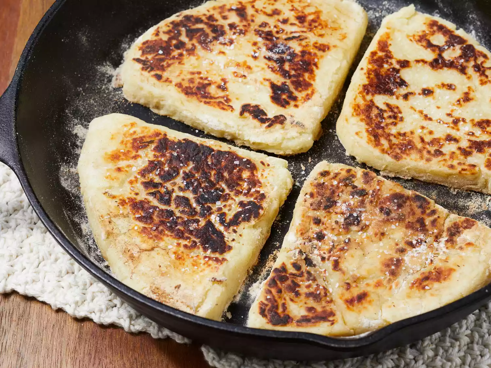

Irish Potato Farls
Home

Description
Potato farls are a traditional Irish potato bread that forms an essential part of the famous Ulster Fry breakfast. These delicious triangular breads are made from a simple mixture of mashed potatoes and flour, then fried until golden and crispy on the outside while remaining soft and fluffy on the inside.
Dating back generations, potato farls (from the Gaelic word "fardel" meaning "fourth part") were created as a way to use leftover mashed potatoes. They're incredibly versatile - serve them hot with breakfast alongside eggs and bacon, or with butter and jam for a simple snack. They're particularly popular on St. Patrick's Day, but delicious enough to enjoy year-round!
Ingredients
- 1 lb (450g) starchy potatoes (such as Russet or Maris Piper), peeled and cut into chunks
- 2 tablespoons butter
- 1/2 teaspoon salt
- 1/4 teaspoon black pepper
- 1 cup (125g) all-purpose flour, plus extra for dusting
- 2 tablespoons vegetable oil or butter for frying
Steps
- Place the potatoes in a large pot and cover with cold water. Bring to a boil, then reduce heat and simmer until the potatoes are tender when pierced with a fork, about 15-20 minutes.
- Drain the potatoes thoroughly and return them to the hot pot. Allow them to steam dry for 1-2 minutes.
- Add the butter, salt, and pepper to the potatoes and mash until smooth and lump-free.
- Allow the mashed potatoes to cool slightly until they're comfortable to handle but still warm.
- Add the flour to the mashed potatoes and mix gently until a soft dough forms. Be careful not to overmix, as this can make the farls tough.
- Turn the dough out onto a floured surface and knead lightly just until smooth.
- Divide the dough into 2 equal portions and shape each into a ball.
- Roll or pat each ball into a circle about 1/2 inch (1.25 cm) thick.
- Using a knife, cut each circle into 4 triangular wedges (farls).
- Heat the oil or butter in a large skillet or griddle over medium heat.
- Cook the farls for 3-4 minutes on each side until golden brown and crispy on the outside.
- Serve immediately while hot, or cool on a wire rack if saving for later.